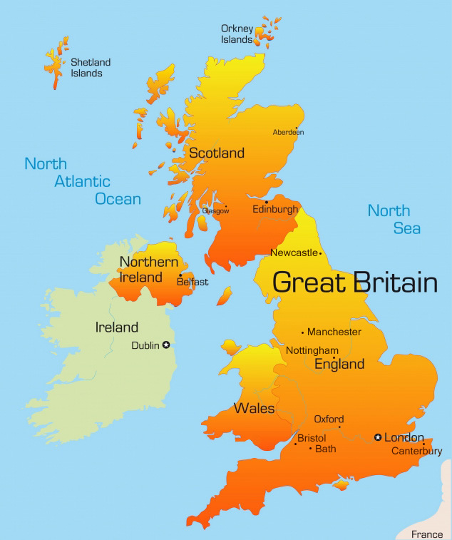
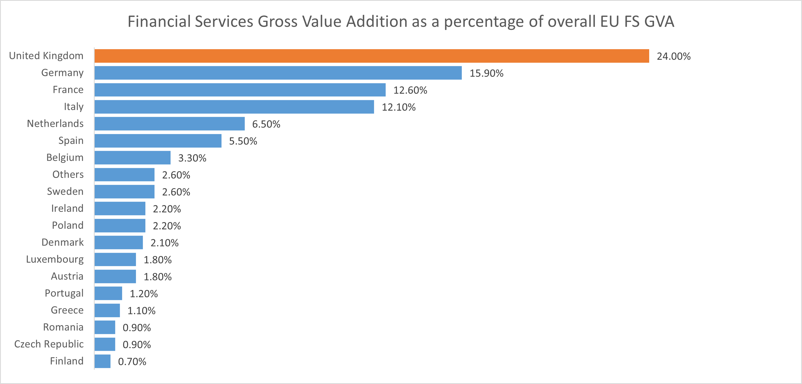
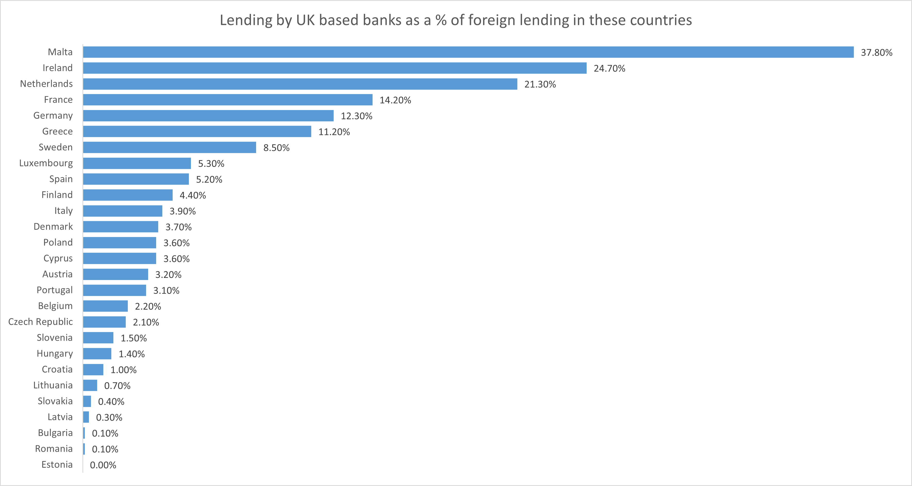

Brexit - current status
Its been two months since UK uncoupled from the European Union single market. The UK and EU signed the withdrawl agreement on 30th January 2020 and entered into a one year transistion period from 31st January 2020 to 31st December 2020. During the transition period, UK was not a part of the EU but followed all its rules. After the transition period, UK is not bound by any EU laws and vice-versa.
Both of them agreed for a deal on 24th December 2020. The deal contains new rules on how the UK and EU will live, work and trade together. The deal lays the foundation but does not contain the fine-print, which shall be finalized over the next few years. In this article, we shall discuss what the new deal is about and its implication on financial markets. However, before we do that, let us understand a few basic things about Brexit and its importance. The following paragraphs provide an introduction to Brexit, and the paragraphs following shall discuss the new deal and its implications.
Brexit Jurisdiction
To understand Brexit, we must first understand the jurisdiction and its importance, as most of the complex issues with Brexit are related to jurisdiction. The below map shows the UK and Ireland. The UK comprises of four countries - England, Scotland, Wales and Northern Ireland. They are brought together as an Union through the Union Acts of 1707 and 1800. Ireland is a separate country, only Northern Ireland is a part of the UK. Baring Northern Ireland, the big island which comprises of the countries England, Wales and Scotland is commonly referred to as "Great Britan", from which the term "Brexit" comes from. In real, it is not Great Britain that is exiting the European Union, it is "Great Britain" plus "Northern Ireland", together comprising the United Kingdom (UK) that is exiting the European Union. The present term "Great Britain", from Brexit's perspective, also includes Northern Ireland.

But it is not just the UK that is exiting the European Union, there is more to it. The UK comprises of the following overseas territories, which shall also be exiting the European Union, though indirectly.
- Anguilla
- Cayman Island
- Falkland Islands
- Gibraltar
- South Georgia
- South Sandwich Islands
- Montserrat
- Pitcairn
- Saint Helena
- Ascension Island
- Tristan de Cunha
- British Antartic Territory
- Turks and Caicos Islands
- Bermuda
- Sovereign Base Areas
Why should we bother about Brexit?
To understand this, let's look at a few numbers. The following table and the information shows the top 7 countries in the world in terms of GDP.
| Rank |
Country Name |
GDP (Nominal) (in USD billions) |
GDP (Nominal Annual Per-Capita) (in USD) |
| 1 |
United States |
21,920 |
66,140 |
| 2 |
China |
16,490 |
11,710 |
| 3 |
Japan |
5,100 |
40,730 |
| 4 |
Germany |
4,320 |
51,970 |
| 5 |
France |
2,920 |
44,770 |
| 6 |
United Kingdom |
2,860 |
42,240 |
| 7 |
India |
2,830 |
2,030 |
UK's Area: 2,42,495 Sq. Kms (7.3% of India's size)
India's Area: 32,87,263 Sq. Kms
Though the physical size of UK is very small in relation to India, its GDP is almost equal and its per-capital GDP is significantly higher than that of India. Therefore, it is considered as a developed country, while India is a part of the Emerging economies.
If we consider other parameters such as the contribution of UK's financial services sector to the overall EU's financial services sector, we can find that UK financial services sector constitutes almost a quarter of the overall EU's financial sector. This is a stagerring number overshadowing even the contribution from other developed countries in EU such as Germany, France, Italy and Netherlands. Similarly, the banks based out of UK play an active role in the lending in other EU markets. The second chart below shows the percentage lending by UK based banks as a percentage of foreign lending in various EU countries.


Apart from these banking statistics, UK based financial institutions play an dominant role in the capital and risk management markets in EU. The following table shows the involvement of UK based financial institutions in the overall EU markets.
| Particulars |
Percentage Share |
| UK share of interest rate derivatives trading in EU |
82% |
| Share of US investment bank's EMEA revenue generated in the UK |
80% |
| UK share of FX trading in the EU |
78% |
| Share of MiFID authorised firms based in the UK |
75% |
| UK share of Euro currency trading in the EU |
69% |
| Share of primary issuance by EU corporates facilitated by UK based banks |
66% |
| London Stock Exchange (LSE) group share of EU equity trading volumes |
25% |
| UK share of equity outstanding in the EU |
23% |
| LSE group shares of EU fixed income trading volumes |
23% |
| UK share of debt outstanding in the EU |
21% |
| Share of UK based firms that are issued MiFID passports |
75% |
| UK's share of Euro-denominated Interest Rate Derivatives clearing |
75% |
| Share of EU assets managed by UK based asset managers |
40% |
| Share of EU based pension funds managed by UK based asset managers |
50% |
| Share of UK based firms in the private equity and venture capital deals executed in Europe |
25% |
| Share of EU hedge fund assets managed by UK based funds |
80% |
UK plays an important role in the financial markets. It is the international financial capital of the world. It plays a predominant role in the capital markets of Europe. Therefore, Brexit is an important issue not just for UK and Europe but for the world financial markets.
The New Deal
The new deal titled "Trade and Cooperation Agreement Between The European Union and European Atomic Energy Community, of the One Part, and The United Kingdom of Great Britain and Northern Ireland, of the Other Part" is a 1246 page long agreement on the following aspects of their relationship.
- Trade in Goods and Services
- Aviation
- Road Transport
- Social Security Coordination and Visas for Short-Term Visits
- Fisheries
- Law Enforcement and Judicial Cooperation in Criminal Matters
- Health Security
- Cyber Security
- Dispute Settlement; and
- Other provisions
Broadly, the agreement says the following.
- There will be no taxes on goods (tariffs) or limits (quotas) on the amount that can be traded between the UK and the EU
- There will be border checks for safety and customs
- New technical specifications have been introduced for many products. For example, uncooked meats like sausages and burgers cannot enter the EU unless they are frozen to -180c
- Financial services industry lost their automatic right to enter EU markets. There will be certain restrictions.
- Professional service providers such as doctors, architects, lawyers, accountants lost their automatic access too. In fact, there will no longer be automatic recognition of professional qualifications.
- Before Brexit, UK used to follow a single set of rule for the entire EU. Now, it will need to comply with rules of each individual country separately.
- Apart from professional qualifications, even other qualifications may not be recognized any further. People with UK degrees might have to get an equivalence certificate.
- UK nationals do not need a visa to visit EU upto 90 days. For stays beyond 90 days, they need to get a visa. (I am not sure whether vice-versa is true)
- EU pet passports will no longer be valid.
- Roaming charges for mobile phone will apply when we cross borders
- The European Health Insurance Cards (EHIC) will no longer be valid after some time. They will be replaced with a new UK Global Health Insurance Card
- Before Brexit, fisherman from other countries could have fished in UK waters. It will no longer be possible after five-and-half-years from now. UK fisherman will have greater access to its own waters.
- There will be no role for the UK in the European Court of Justice (ECJ). Disputes will have to be handled via tribunal methods. Certain EU laws do apply to Northern Ireland as it has a land border with Ireland and the border is not fenced. In future, this may change.
- The UK will no longer have automatic access to key security databases of the EU. It will also not have any representation in Europol. Some information sharing arrangements have been agreed.
Impact on Financial Services
The deal includes a free-trade agreement on goods but does not cover financial services in a significant way. The integration of UK and EU financial services industry is too complex to be resolved in a hurried deal. Both the parties decided to iron-out their differences with regard to financial services over a period of time through further negotiations. Before Brexit, UK based banks operated across the EU via MiFID passporting system, which allowed them to sell their services without establishing a branch in the EU (that means, they operated directly from their London offices). Currently, after Brexit, the MiFID passporting system does not apply to UK. Therefore, the UK based banks are operating in the EU via their EU-based branch offices (by following EU rules) and not directly from London like before.
The EU is considering to grant something called as "equivalence status" to the UK based financial services providers. The issue with this arrangement is that it is unilateral in nature and could be withdrawn at a short notice. EU based banks do not have an issue with any "equivalence" while operating in UK because they always have been operating through branches, which followed the single market rules before Brexit and would now be following UK based rules after Brexit.
In the final Brexit deal, both sides agreed to reach a Memorandum of Understanding (MoU) on financial services by end of March 2021. If achieved, this will provide a framework for further cooperation in financial services in future.
Despite the current uncertainity, there is optimism that a comprehensive deal on financial services will be achieved over time. Both rely heavily on each other for financial services and hence uncertainity and no deal is not an option in the long-run. There will surely be some realightment in Euro based securities and derivatives trading and clearing, as some of it will migrate to EU over a period of time (mostly to Frankfurt and Paris). Rest of the financial services such as non-Euro based securities and derivatives trading and clearing, private equity and consulting, asset management and structured finance would most probably stay in London.
END OF MY NOTES